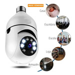
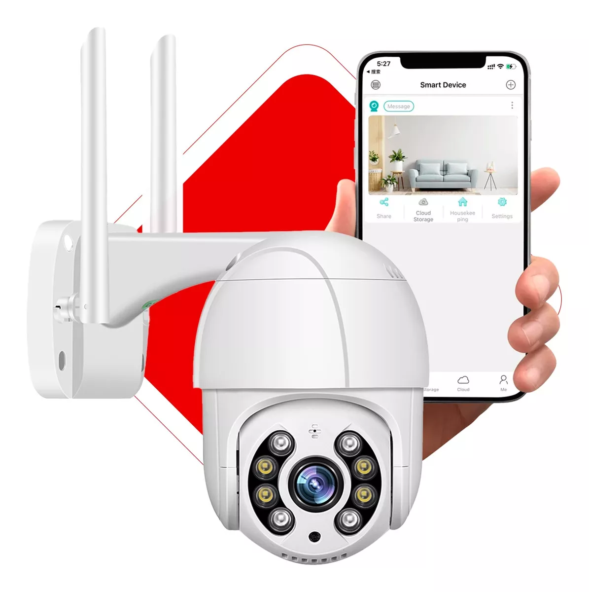
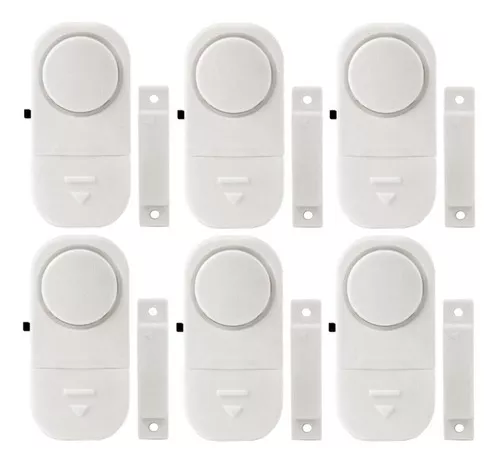
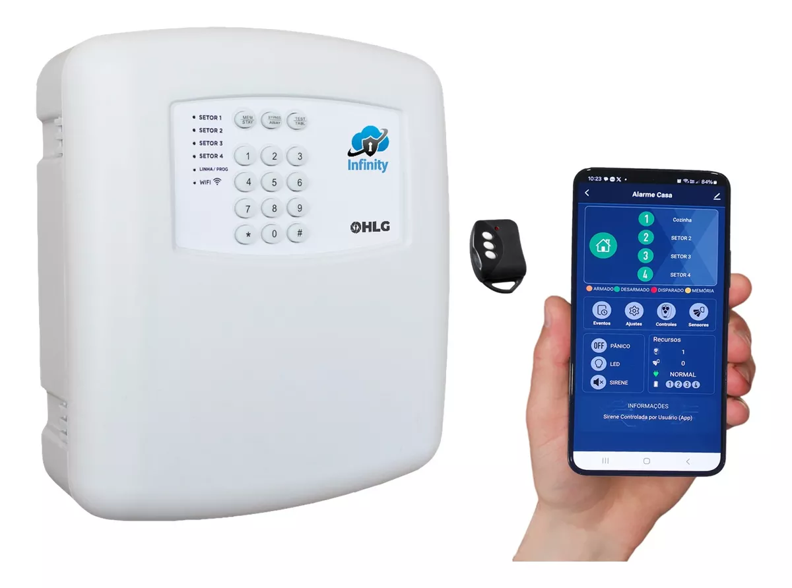
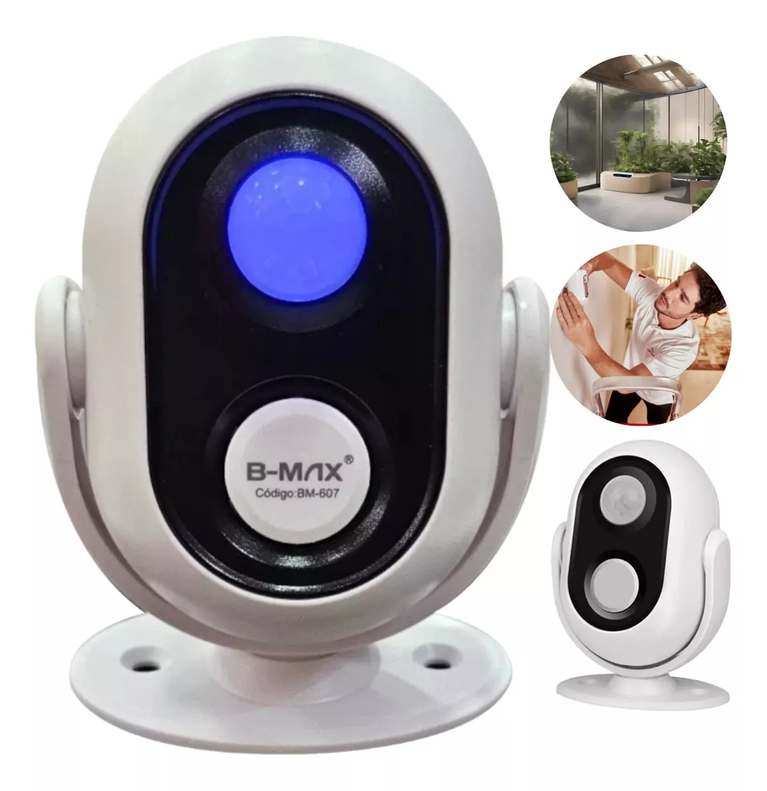
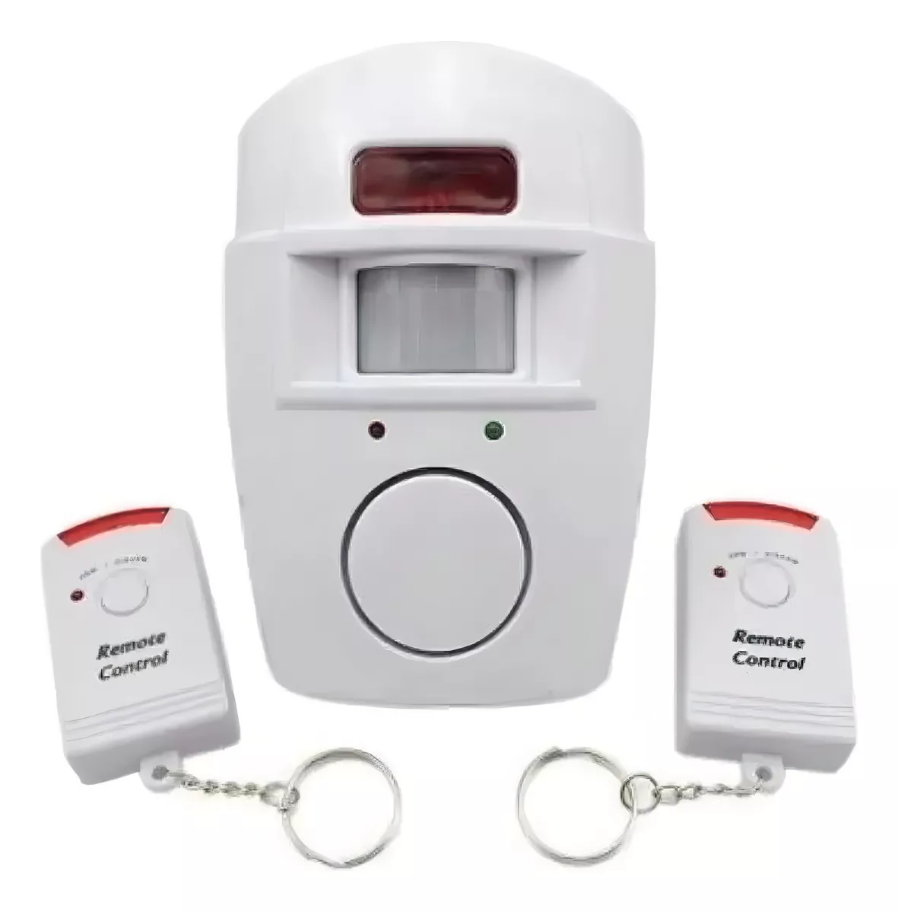
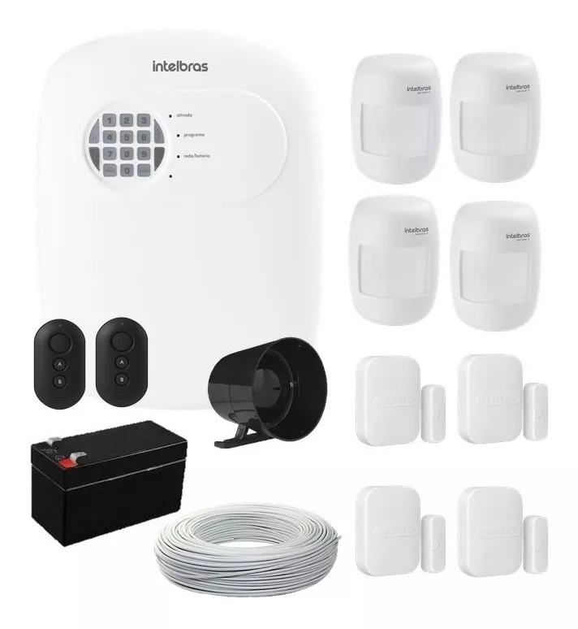

Sobre nós
Nossa empresa: atua no mercado há mais de 10 anos, com o proprietário possuindo mais de 17 anos de experiência no setor. Trabalhamos exclusivamente por indicações e, portanto, não recebemos clientes em nossa loja. Todo o atendimento é realizado de forma presencial. Somos especializados no atendimento a condomínios.
Missão
Missão: Proteger pessoas, patrimônios e processos por meio de soluções inovadoras em segurança e automação, garantindo confiança, eficiência e tranquilidade.
Visão: Ser referência no mercado de segurança e automação, reconhecida pela excelência tecnológica, confiabilidade e impacto positivo na sociedade.
Valores: Compromisso com a segurança, inovação contínua, ética nas relações, atendimento humanizado e respeito às normas e legislações vigentes.
CFTV (Circuito Fechado de TV)
- DVRs - Gravadores
- Marcas: Intelbras, Hikvision e Hiseeu
- Opções de câmeras de 4, 8, 16 e 32 canais
- Compatibilidade com aplicativos móveis


Câmeras:
Câmeras de Segurança Diurna e Noturna – Proteção Completa 24h
- Visão Noturna Infravermelho: Imagens nítidas mesmo na completa escuridão, proporcionando vigilância confiável durante a noite
- Alta Definição Diurna: Captura de imagens em cores vibrantes e detalhadas durante o dia, assegurando a identificação precisa de pessoas e objetos.
- Modo Automático Dia/Noite: Alternância inteligente entre visão colorida diurna e infravermelho noturno, adaptando-se automaticamente à luminosidade do ambiente.
- Qualidade e Confiabilidade: Equipamentos com tecnologia de redução de ruído, garantindo imagens claras em todas as condições de iluminação.
Proteja o que é importante com tecnologia de ponta! Entre em contato para saber mais sobre nossos produtos e serviços de instalação.
 Cercas Elétricas e Consertinas – Segurança Perimetral Eficiente
Aumente a proteção do seu imóvel com nossas soluções de segurança perimetral:
- Cercas Elétricas de Alta Voltagem: Sistema de choque não letal que atua como forte inibidor contra invasões, acionando alarmes em caso de violação.
- Consertinas de Alta Resistência: Fabricadas em aço galvanizado, oferecem barreira física robusta e durável, dificultando tentativas de escalada.
- Instalação Personalizada: Projetos adaptados às necessidades do seu imóvel, seja residencial, comercial ou industrial, garantindo máxima segurança.
- Manutenção e Suporte: Serviço completo de manutenção preventiva e corretiva para assegurar o pleno funcionamento do sistema.
Proteja seu patrimônio com soluções confiáveis e eficientes! Entre em contato para mais informações sobre nossos produtos e serviços de instalação.


Sistemas de Alarmes – Segurança 24h para seu Imóvel
Proteja sua casa ou empresa com nossos avançados sistemas de alarmes:
- Alarmes Inteligentes: Sensores de movimento, abertura e vibração, acionando alertas imediatos em caso de intrusão.
- Monitoramento Remoto: Controle e monitoramento do sistema diretamente pelo seu smartphone, garantindo vigilância constante, onde quer que esteja.
- Alertas Sonoros e Visuais: Sirenes de alta potência e luzes piscantes para deter invasores e alertar a vizinhança.
- Instalação Profissional: Equipe especializada que realiza a instalação e configurações do sistema, adequando-o à sua necessidade de segurança.
Garanta a proteção do seu patrimônio com um sistema de alarme eficiente e confiável! Entre em contato para conhecer nossos modelos e serviços de instalação.
    Serviços
Instalação e Manutenção
Oferecemos serviços de instalação e manutenção de todos os nossos produtos
Manutenção Preventiva:
Serviço de contrato mensal para verificar e prevenir falhas nos equipamentos.
Oferecemos: também o serviço de contrato mensal para condomínios e prédios. O contrato é personalizado de acordo com sua necessidade demanda do seu local.
Contato
Entre em contato conosco via:


{kind=link}
{kind=link}
{kind=link}
{kind=link}
{kind=link}
{kind=link}
{kind=link}
{kind=link}
{kind=link}
O que são câmeras de segurança e como funcionam?
As câmeras de segurança são dispositivos usados para monitorar e gravar atividades em áreas específicas. Elas funcionam capturando imagens e vídeos, que podem ser visualizados em tempo real ou gravados para revisão posterior. As câmeras podem ser instaladas em ambientes internos ou externos e são uma ferramenta essencial para garantir a segurança de residências e empresas.
Como posso contratar a instalação de um sistema de alarme de segurança?
Para contratar a instalação de um sistema de alarme de segurança, você pode entrar em contato conosco através do nosso site ou telefone. Nossa equipe de especialistas agendará uma visita para avaliar suas necessidades específicas e fornecer um orçamento personalizado. Nós cuidamos de todo o processo de instalação e oferecemos suporte contínuo para garantir que seu sistema funcione perfeitamente.